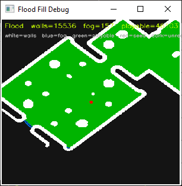
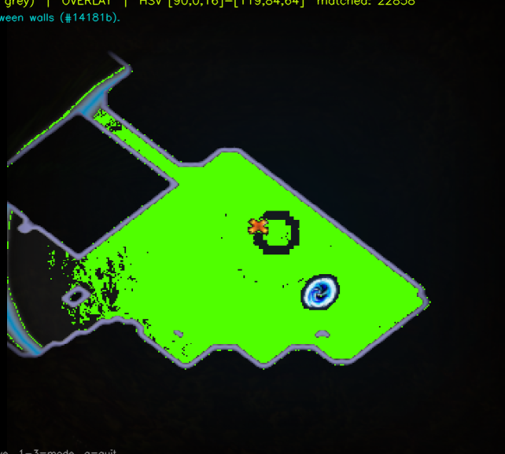
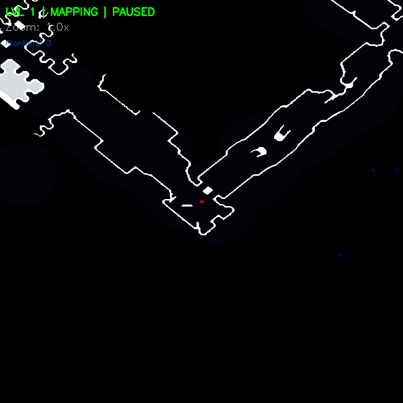

Where We Started
Flood fill was the first workable map reader
Navigation was the first real problem poeauto tried to solve. Before combat, loot, or detection, the challenge was movement: how do you move through a Path of Exile map intelligently without hardcoded routes?
The earliest system used HSV filtering and flood fill on the minimap to separate walls from playable space. When it worked, it gave us a clean local read of the map and a usable foundation for pathing. The idea was simple: isolate the wall structure, flood the interior, and treat the remaining space as navigable terrain.

Why We Changed
The idea worked, but the consistency did not
The issue was consistency. Most of the time, the flood fill approach broke down under real map conditions. Brightness shifts, icons, overlapping effects, and noisy wall boundaries caused the fill to leak, overfill, or misread large sections of the map. Even small vision errors could turn into bad paths or completely invalid movement decisions.
The method was not conceptually wrong, but it was too fragile for reliable navigation. A movement system cannot depend on a pipeline that only works when the visual conditions are perfect.

Where We Are Now
Navigation now uses a cleaner read and longer memory
The current navigation system is built around a much more stable pipeline. Instead of relying on raw flood fill behavior alone, it combines a luminosity curve, tighter HSV extraction, icon rejection, and global map stitching. That gives the bot a cleaner wall read, more continuity across frames, and a persistent representation of the map over time.
This changed navigation from a fragile local read into a more reliable world-modeling system. Instead of asking only what the current minimap frame looks like, the bot can now track where it has already been, what remains unexplored, and which routes are safest based on accumulated map state.


The code changes below show the difference in philosophy between the two systems. The older approach mostly stopped after extracting a raw wall mask, which meant navigation quality rose and fell with that one local read. The newer approach spends more work up front cleaning the image, subtracting false positives, and then merging each frame into a persistent global map instead of trusting a single snapshot.
hsv = cv2.cvtColor(img, cv2.COLOR_BGR2HSV)
lower_wall = np.array([115, 60, 60])
upper_wall = np.array([125, 255, 255])
mask_raw = cv2.inRange(hsv, lower_wall, upper_wall)
kernel_close = np.ones((5, 5), np.uint8)
mask_filled = cv2.morphologyEx(mask_raw, cv2.MORPH_CLOSE, kernel_close)
final_mask = mask_filledThe old snippet is intentionally simple: convert to HSV, threshold a narrow wall color range, close small gaps, and use that mask as the basis for navigation. That made it easy to prototype, but also meant every downstream decision depended on a mask that could drift badly as soon as the minimap got noisy.
gamma = 2.5
lookUpTable = np.empty((1, 256), np.uint8)
for i in range(256):
lookUpTable[0, i] = np.clip(pow(i / 255.0, gamma) * 255.0, 0, 255)
img_balanced = cv2.LUT(img, lookUpTable)
hsv = cv2.cvtColor(img_balanced, cv2.COLOR_BGR2HSV)
lower_wall = np.array([110, 60, 60])
upper_wall = np.array([135, 255, 255])
mask_raw = cv2.inRange(hsv, lower_wall, upper_wall)
mask_raw = cv2.subtract(mask_raw, mask_portal)
mask_raw = cv2.subtract(mask_raw, mask_arrow)
mask_raw, excluded_mask, matches_found = mask_icons(img, mask_raw)The newer extraction stage does much more before navigation ever sees the map. A luminosity curve suppresses faint visual noise, the HSV range is widened and retuned for real tilesets, and icons such as portals or arrows are subtracted so they do not get mistaken for valid structure. The result is a cleaner local read before pathing begins.
wall_mask = (mask > 0)
conf_roi[wall_mask] = np.minimum(conf_roi[wall_mask] + 1, 100)
empty_mask = (mask == 0) & (vision_circle > 0)
if excluded_mask is not None:
empty_mask &= (excluded_mask == 0)
conf_roi[empty_mask] = np.maximum(conf_roi[empty_mask].astype(int) - 5, 0).astype(np.uint8)
new_walls = (conf_roi >= self.CONF_THRESHOLD)
target_roi[new_walls] = 255
dead_walls = (conf_roi == 0) & (vision_circle > 0)
target_roi[dead_walls] = 0This final piece is what really changed navigation. Instead of treating each minimap capture as truth, the system accumulates confidence in walls over time and can also erase stale walls when new evidence says they are gone. That is what turns the newer version from a one-frame detector into a stitched map system with memory.